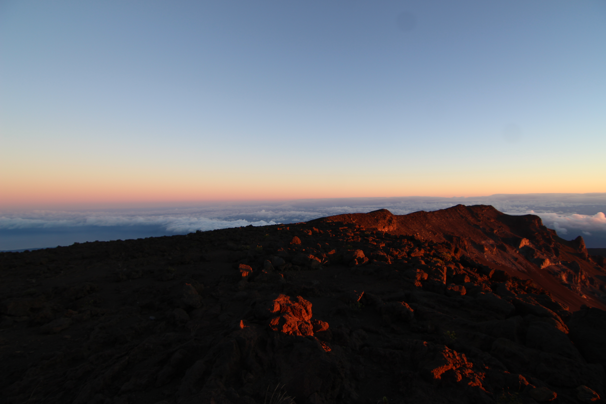

Haleakalā Volcano
Camera Setup: Canon EOS Rebel SL1 and a Tokina lens

Haleakalā Observatory
Camera Setup: Canon EOS Rebel SL1 and a Tokina lens

Riding Mountain National Park Visitor Centre at Night
Camera Setup: Canon EOS Rebel SL1 and a Tokina lens. Focal length of 11m, stacked exposure.

Jupiter
Camera Setup: Canon EOS Rebel SL1 with 32mm zoom lens, f-stop f/4, ISO-6400, and 1/400 seconds exposure. Image captured through 8 inch celestron SCT.
Two days after the great Conjunction of Saturn and Jupiter, on December 23, 2020, 7 pm...the first day with clear skies!
Camera Setup: Canon EOS Rebel SL1 and 160mm focal-length zoom lens, on tripod setup..

Riding Mountain National Park - Wishing Well gardens
Camera Setup: Canon EOS Rebel SL1 and 55m focal-length zoom lens.

Riding Mountain National Park - Visitor Centre gardens
Camera Setup: Canon EOS Rebel SL1 and 250m focal-length zoom lens.